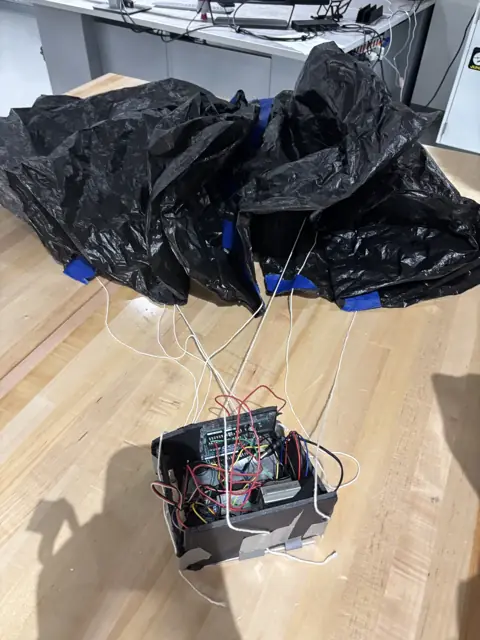
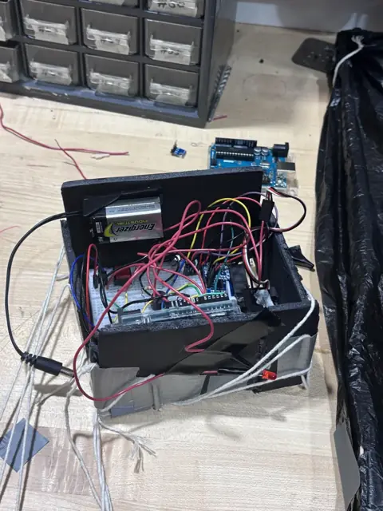
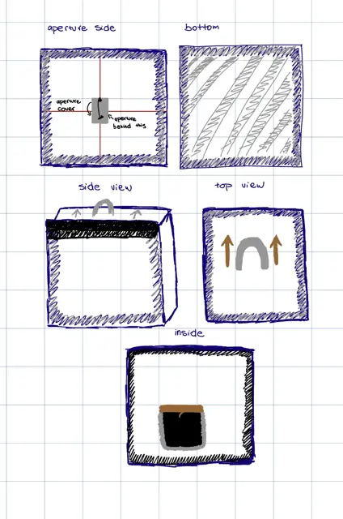

Aerospace Engineering Principles
About the course
Aerospace Engineering Principles is built on Engineer Your World, a year-long engineering curriculum created by the University of Texas at Austin's Cockrell School of Engineering and taught in over 250 schools. It offers an optional dual enrollment pathway for UT Austin college credit. It is a general engineering course: students use math and science to solve team-based design challenges and practice engineering “habits of mind” that apply well beyond engineering.
Project Goal
Goal: learn to think and work like an engineer by solving a different real-world design challenge in each unit, for a real customer with real constraints. Along the way, the course covers the core engineering disciplines (mechanical, civil, chemical, electrical, and aerospace) and a design process that can be repeated on any problem.
How the Course Works
The year is a series of challenges. Each one introduces a different engineering discipline:
- Unit 1: Overview & Norms. Engineering notebooks, documentation, and how effective teams work.
- Unit 2: Discovering Design (Exploration). Pinhole camera for users with limited hand dexterity.
- Unit 3: Reverse Engineering (Mechanical). Taking apart a competitor's flashlight and pitching a redesign.
- Unit 4: Understanding Data (Chemical). Collecting and making sense of data.
- Unit 5: Designing with Data (Civil). Safer Buildings for an earthquake-prone city.
- Unit 6: Programming (Electrical & Software).
- Unit 7: Systems Engineering (Aerospace). A camera payload that had to launch, take a photo, and land safely.
Grades are split evenly: 50% team design challenges (final design quality, team documentation, presentations) and 50% individual work (engineering notebooks, assessments, and peer and self-assessments).
Highlights from My Year
- Reverse engineering a flashlight (Unit 3). My team interviewed users, benchmarked a competitor's flashlight, built functional models, compared redesign concepts, and made a redesign pitch to “management.”
- Camera payload (Unit 7). Our team split into payload/electronics, structure, and parachute subsystems. The system survived repeated launches and captured a photo, though it came in overweight. My main lesson was that subsystem teams have to communicate from day one.
Photos & Visuals



My Role
I was a team member on each unit's design challenge and completed the individual notebook and assessment work.
What I Learned
A repeatable engineering design process, engineering notebook documentation, customer-needs analysis, functional modeling, data-driven decisions, systems thinking, and working on teams built to mix different strengths.